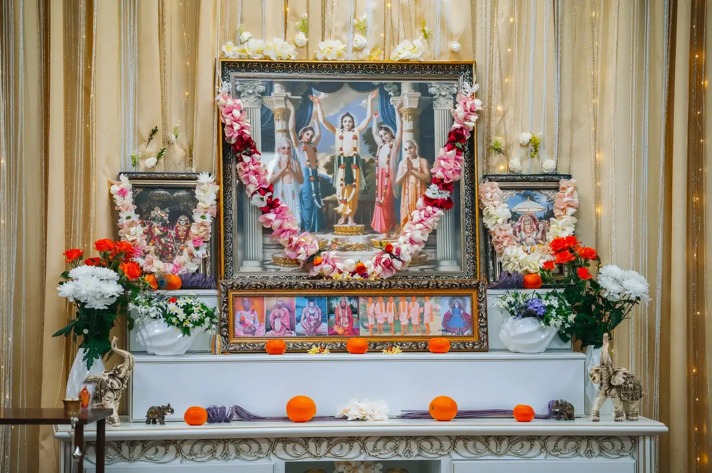
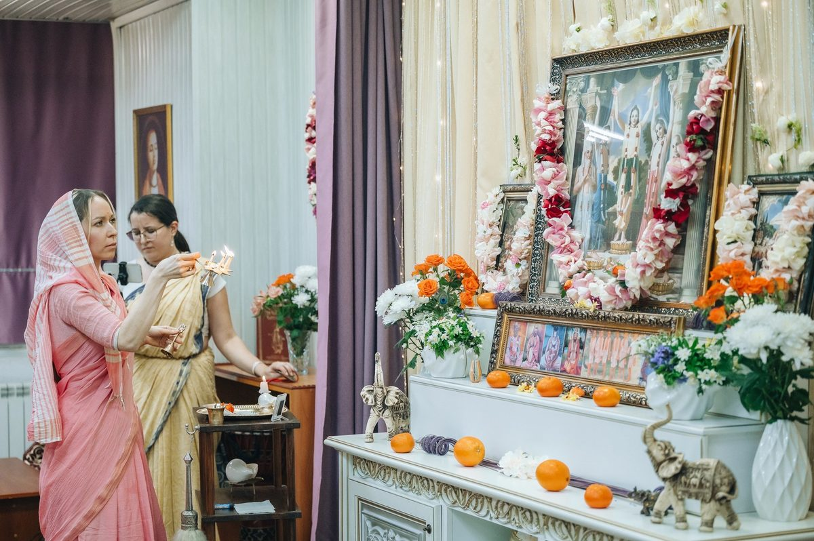
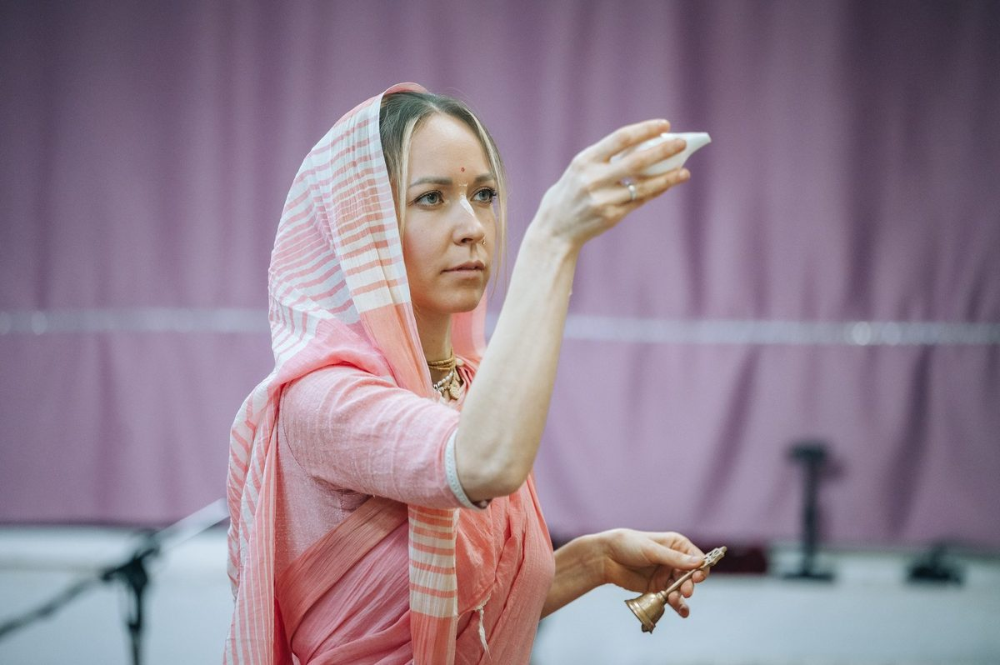
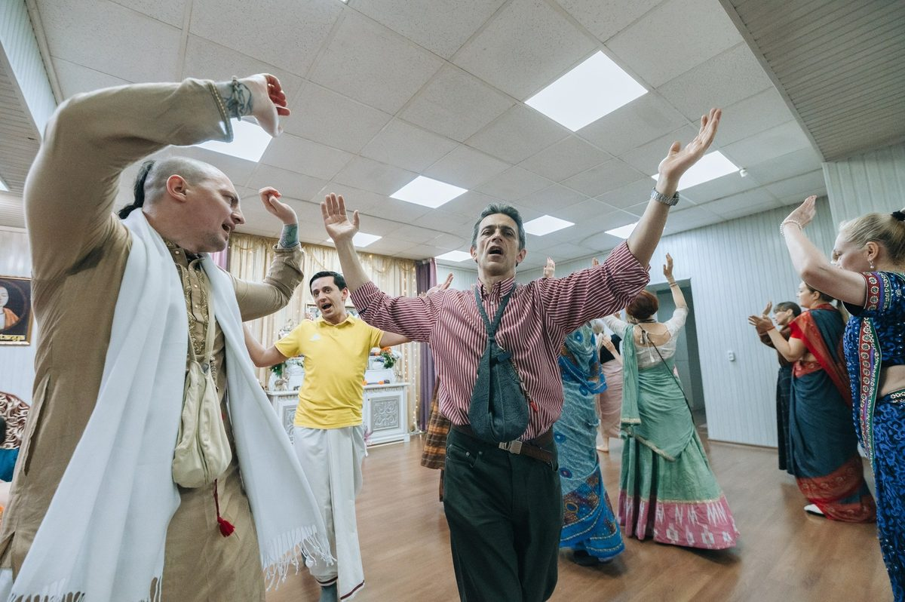
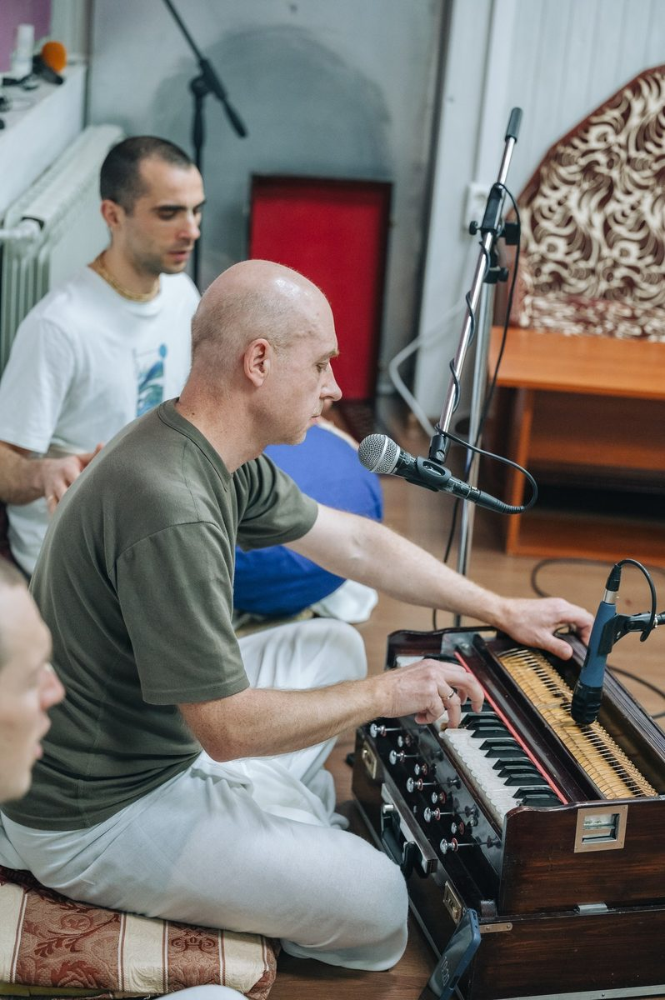
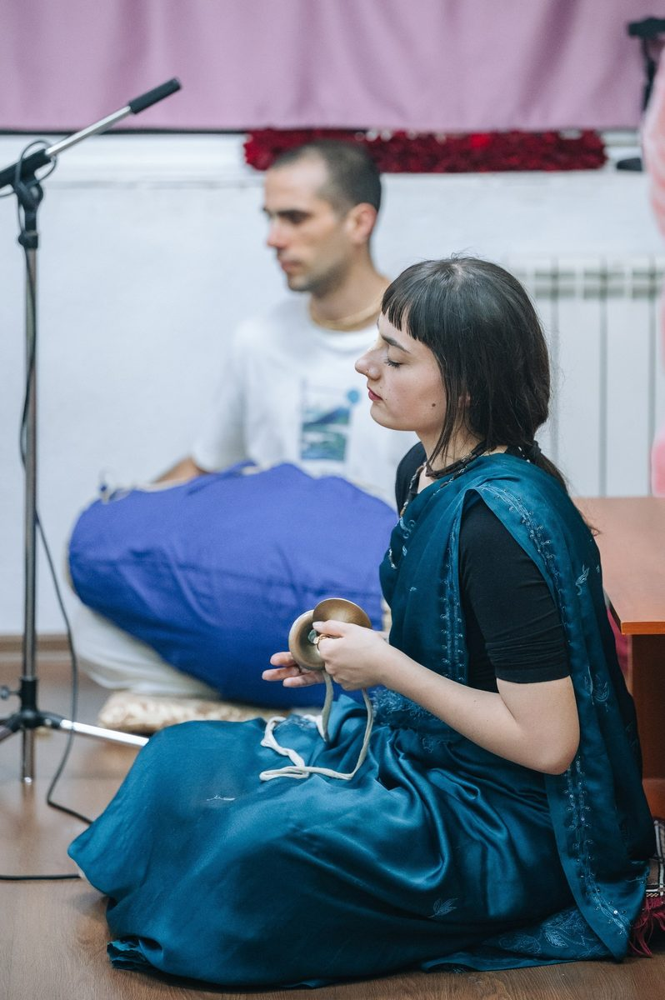
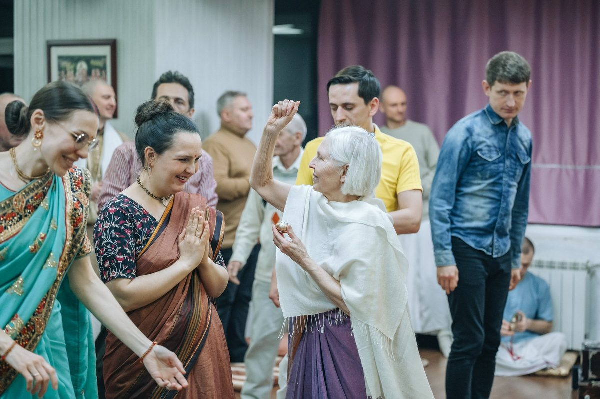
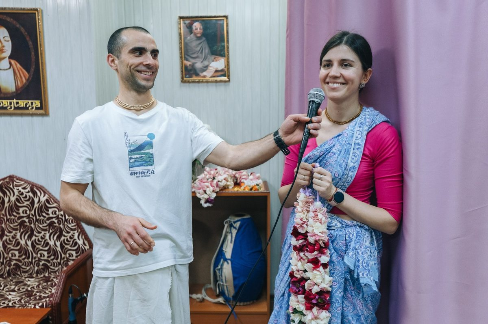
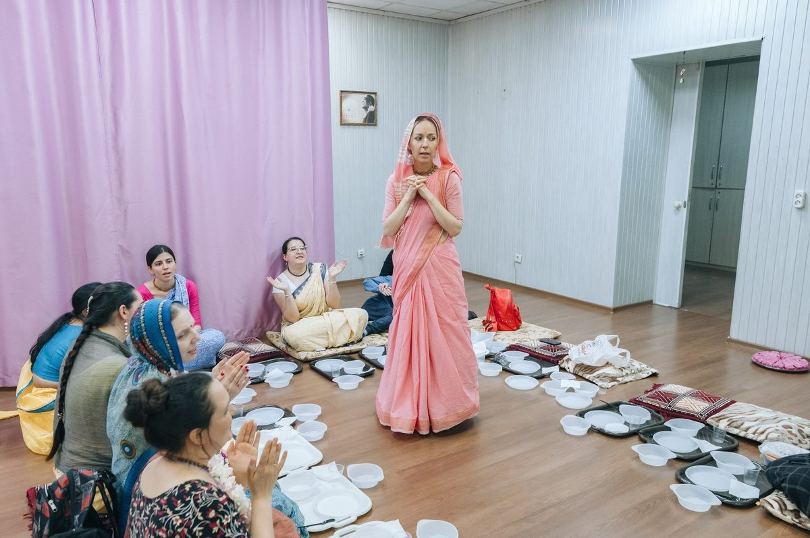
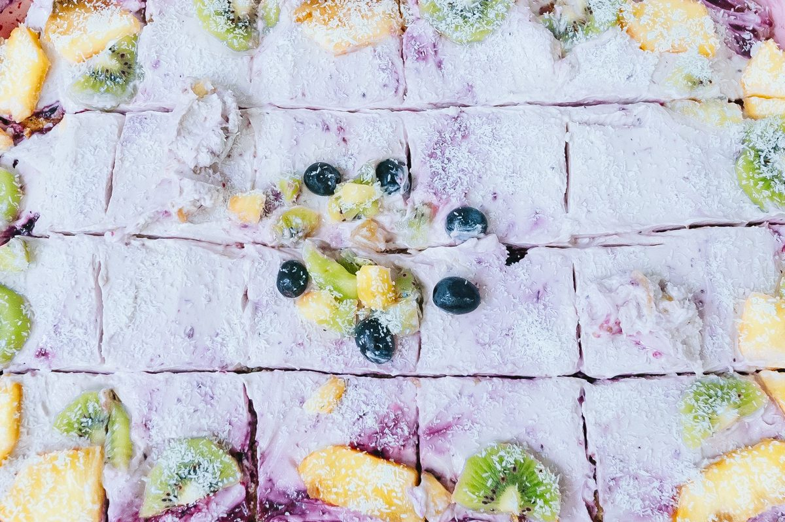

Ласкаво просимо!
Відвідайте нашу недільну програму ведичної культури — вона безкоштовна та існує завдяки добровільним пожертвам. Це простір духовного спілкування, знань та внутрішнього спокою.

Центр ведичної культури: недільні фестивалі, лекції з філософії, мантра-медитація, курси кулінарії та музики, благодійні обіди «Їжа життя». Приходьте — тут вам завжди раді.
Відвідайте нашу недільну програму ведичної культури — вона безкоштовна та існує завдяки добровільним пожертвам. Це простір духовного спілкування, знань та внутрішнього спокою.
Кожної неділі зустрічаємось у нашому центрі в атмосфері духовності та злагоди
Святкові програми за вайшнавським календарем та дні посту Екадаші — слідкуйте за оголошеннями в Telegram.
Вам варто завітати до нас, якщо ви:
А також, якщо ви:
Це простір для всіх, хто хоче більше миру в серці та ясності в житті.
Якщо ви вперше — ось три прості дії
Просто прийдіть о 13:30. Нічого не треба знати чи вміти. Посидьте, послухайте, поїжте.
«Бгаґавад-Ґіта як вона є» — почніть з неї. У храмі є безкоштовні брошури для новачків.
Повторюйте «Харе Крішна» кілька хвилин вранці. Відчуйте різницю самі.
Знайомство з Бгаґавад-Ґітою, законами карми та реінкарнації. Глибше занурення — на курсах «Хто Я?», «Основи ведичної філософії», «Бгакті-шастри».
В основі вчення — Бгагавад-гіта: душа вічна, а матеріальне тіло тимчасове. Через віддане служіння (бгакті-йогу) душа відновлює свій зв'язок з Крішною — Верховною Особою Бога.
До курсів →Практика повторення святих імен — серце бгакті-йоги:
Харе Крішна, Харе Крішна,
Крішна Крішна, Харе Харе /
Харе Рама, Харе Рама,
Рама Рама, Харе Харе
Гаура-пурніма, Чернівці — свято, кіртан і прасад

















Більше фото — в нашому Instagram

А.Ч. Бгактіведанта Свамі Прабгупада (1896–1977)
У 1966 році, у віці 70 років, він прибув до Нью-Йорка і заснував Міжнародне товариство свідомості Крішни. Він переклав з санскриту і прокоментував десятки томів ведичних писань — саме в його перекладі ми читаємо ці книги.
Книги в перекладі Шріли Прабгупади — можна придбати у храмі
Діалог Крішни й Арджуни. Переклад і коментарі Шріли Прабгупади. З чого починають.
Історії та філософія бгакті. Переклад і коментарі Шріли Прабгупади.
Збірка бесід Шріли Прабгупади. Коротко і по суті.
📍 вул. Скальда (Комарова), 40А, Чернівці
20 відгуків у Google · 16 оцінок «5»
«Прекрасне місце для тих, хто в пошуку духовної істини. Надзвичайно світлі, привітні і доброзичливі люди, в наші дні таких мало де зараз можна зустріти. Рекомендую кожному!»
Ірина Михайлюк
«Прекрасне місце, де панує атмосфера доброзичливості і радості! Всі віддані Крішни привітні, світлі і позитивні. Всіх гостей частують смачним прасадом.»
Мирослав Руснак
«Дуже смачна їжа, потужна філософія, гарна компанія, краще місце де мені доводилось бути.»
Єгор Поплавський
«Great atmosphere of pure bhakti) Kirtan very loud, mridang, caratals. A lot of tasty vegetarian food (prasadam).»
Oleksii Blekot
«Супер место для духовного общения! Очень приветливые и гостеприимные! Нет лучше места в Черновцах»
Роман Гунчак
Повна версія – близько 5 годин. Але ви можете бути стільки, скільки вам комфортно. Якщо час обмежений, постарайтесь потрапити принаймні в проміжку 14:00–16:30.
Ні, реєстрація не обов’язкова. Але якщо ви напишете заздалегідь — це допоможе нам краще підготуватися. Наші гості завжди отримують подарунки :)
Так, звичайно. Можна просто сидіти, слухати й відчувати атмосферу без активної участі.
Ні, просто приходьте в зручному одязі та з відкритим серцем. А ще запрошуйте близьких та друзів, адже разом завжди веселіше!
Так, участь повністю безкоштовна. За бажанням можна зробити пожертву, але це не обов’язково.
Недільний фестиваль — сімейний простір. Діти можуть бути разом із батьками на всіх частинах програми. Просимо лише зберігати тишу під час лекції та молитов, наскільки це можливо.
Можна, але ненав’язливо й без спалаху, щоб не заважати іншим.
Так, звісно. Якщо потрібно — можете приєднатися або вийти тихо в будь-який момент.
Ні. Наш рух є частиною давньої вайшнавської традиції, яка зберігається й передається духовними вчителями вже багато поколінь. Практика ґрунтується на авторитетних священних писаннях, високих моральних принципах та служінні Богу і людям.
Ви можете завітати просто з цікавості, поставити будь-які питання і вільно піти, коли забажаєте.
Ні. Вегетаріанська їжа — частина нашої традиції, прояв принципу ненасилля (ахімса), але це не вимога до гостей. Втім, ми будемо раді розповісти вам, чому вегетаріанство таке важливе.